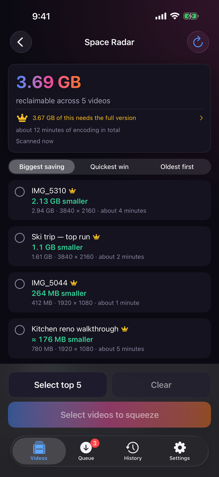
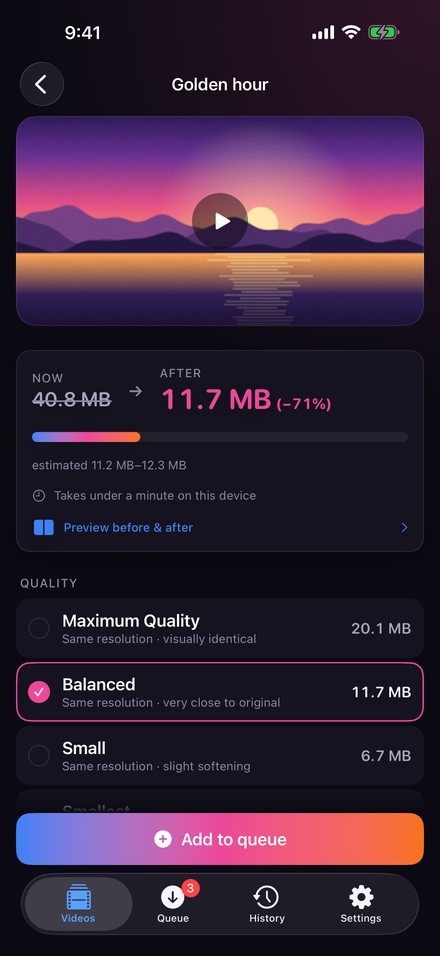
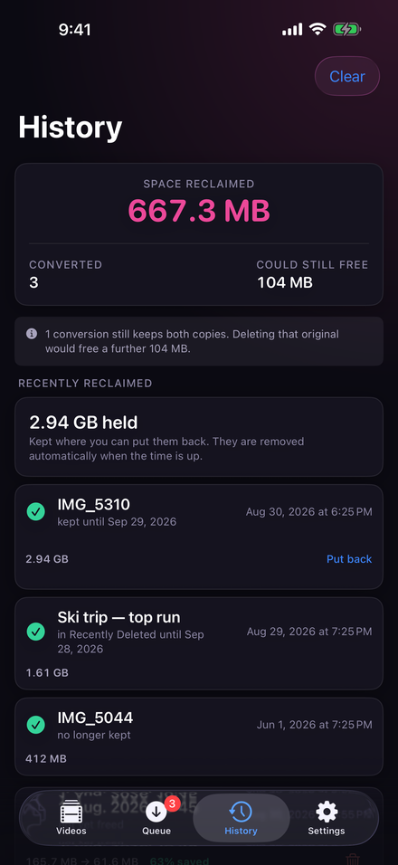

Für iPhone, iPad und Mac
Gigabyte an Videos freigeben
Deine Videos halten Gigabyte fest, die du zurückbekommen kannst. VideoSqueezer findet sie, gibt sie wirklich frei – und die Aufnahmen sehen aus wie vorher.



Es findet sie für dich
Der meiste Speicher steckt in einer Handvoll Videos, die du vergessen hast. VideoSqueezer sieht die ganze Mediathek durch und sortiert jedes danach, wie viel es zurückgeben würde — ohne etwas zu kodieren und ohne etwas zu verändern.
Sortiert, nicht bloß aufgelistet
Nach dem Speicher geordnet, den jedes wirklich freigeben würde, damit oben steht, wo der Speicher ist. Wahlweise nach dem schnellsten Gewinn oder nach Alter.
Es sagt, was es ausgelassen hat
Videos, die schon nahe an der Qualitätsgrenze sind, werden gezählt und ausgeschlossen statt still weggelassen. Eine Liste, die etwas heimlich weglässt, ist von einer, die es übersehen hat, nicht zu unterscheiden.
Beim zweiten Mal sofort
Das Ergebnis wird behalten, also zeigt der Bildschirm die Sortierung beim erneuten Öffnen direkt an, statt die Mediathek noch einmal zu durchsuchen.
Und es ist ehrlich darüber, was es gespart hat
Ein Video zu komprimieren gibt keinen Speicher frei. Das Original zu löschen schon. Der Verlauf hält beides auseinander: was tatsächlich frei wurde, und was nur freigebbar ist, solange beide Kopien existieren.
Gratis ausprobieren, in voller Qualität. Videos bis 60 Sekunden sind für immer gratis, in jeder Qualitätsstufe — keine Demo mit verringerter Qualität. Ein Kauf hebt die Längenbegrenzung auf, und er verlängert sich nicht.
Du siehst es, bevor du dich festlegst
Vorher und nachher, nebeneinander
Eine kurze Probe, kodiert aus der bewegtesten Stelle des Videos, wo Komprimierung am meisten auffällt. Ziehen zum Vergleichen, halten zum Vergrößern.
Eine Spanne, keine falsche Zahl
Die Schätzung ist eine Spanne, weil Encoder über- und unterschießen und eine einzelne Zahl eine Genauigkeit vortäuschen würde, die die App nicht hat.
Kürzen, zuschneiden, im Stapel
Kürzen kostet keine Qualität. Zuschneiden ist eine Geste über einem laufenden Bild. Beides lässt sich auf alle importierten Videos auf einmal anwenden.
Zwei Durchläufe, wenn du willst
Schalte es ein, und der Encoder sieht sich das Video erst an und gibt die Bitrate dann dort aus, wo das Bild sie braucht. Es dauert länger. Das ist der Handel – und du entscheidest.
Lauf lassen
iOS beendet das Komprimieren etwa dreißig Sekunden, nachdem eine App den Bildschirm verlässt – eine lange Warteschlange kann also nicht im Hintergrund laufen. Statt so zu tun als ob, gibt es einen Bildschirm, der dafür gebaut ist, laufen gelassen zu werden.
Ein Bildschirm, Stunden Arbeit
Er hält das Display wach, dimmt auf eine einzige Zeile, die du quer über den Schreibtisch lesen kannst, und startet alles, was du pausiert hattest. Bei wenig Akku oder warmem Gerät hält er selbst an und macht weiter, sobald es abgekühlt ist.
Gesperrt, während es läuft
Face ID oder Touch ID sperrt die App, ohne sie anzuhalten: Der Fortschritt bleibt sichtbar, Vorschaubilder und Titel nicht. Sperrbildschirm und Dynamic Island können allein den Fortschritt zeigen – kein Bild, kein Dateiname.
Für alle, die ihre Videos lieber nicht hochladen
Kein Upload. Keine Analyse. Kein Konto. Jedes Einzelbild wird auf deinem eigenen Gerät gelesen, kodiert und geschrieben. Es gibt keine Werbung, kein Tracking und keinen Server von uns — die Datenschutzerklärung sagt genau, was wo bleibt. Ein Kauf, und er verlängert sich nicht.
Die App spricht elf Sprachen: Englisch, Deutsch, Französisch, Spanisch, Italienisch, brasilianisches Portugiesisch, Japanisch, Koreanisch, Griechisch, Ukrainisch und Russisch.
VideoSqueezer
Gratis ausprobieren, mit einem Kauf freigeschaltet. iPhone, iPad und Apple-Silicon-Mac, elf Sprachen, nichts wird hochgeladen.